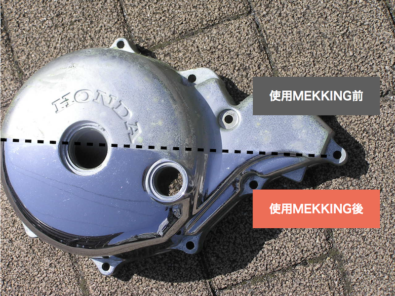
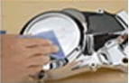
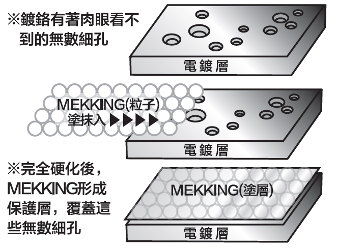
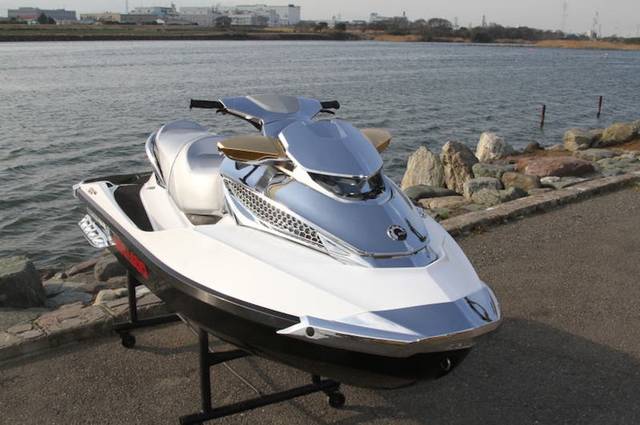
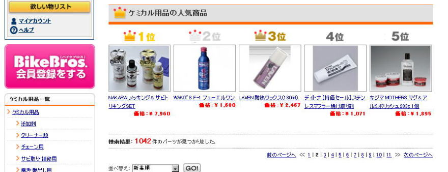
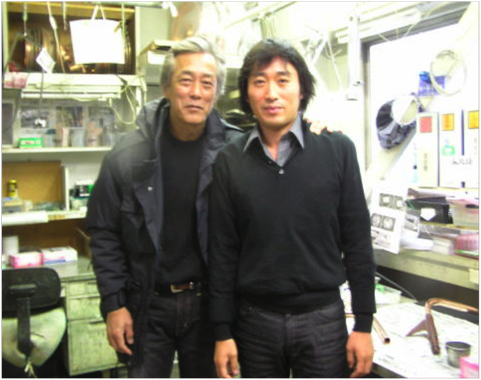
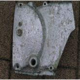
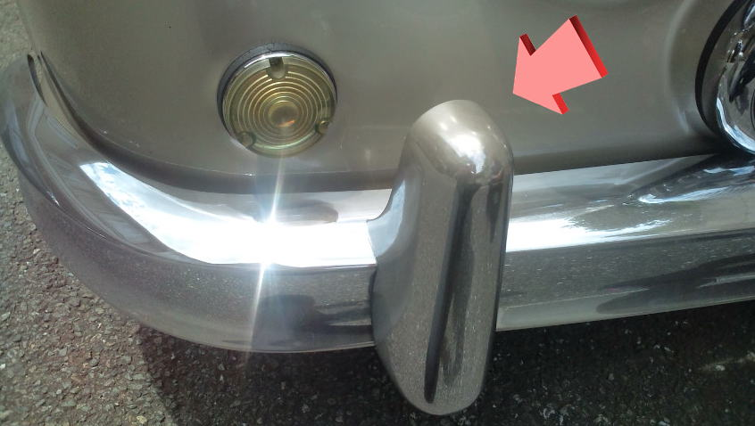

鍍鉻層雖如鏡面般光亮，但有些細微的氣孔是肉眼無法查覺。水和灰塵就會從這個小細孔進入到底材後產生氣泡和鐵鏽。
MEKKING是一種化學物質，經由塗抹擦拭，讓細顆粒覆蓋氣孔，提高耐腐蝕性。

您對電鍍零件感到困擾嗎？
- 持續電鍍的光澤！
- 想了解電鍍的清洗方法！
- 不懂電鍍的使用方法…
- 想讓機械有光澤
- 想讓愛好使用者見證！
- 想要增加光澤，受到肯定。
- 總而言之最支持電鍍！
這是可以解決的！

什麼是電鍍保護劑？
專業的電鍍工廠所開發的史上最強電鍍保護劑！
電鍍公司所開發的MEKKING即使在梅雨季，放置屋外也不容易生鏽！
這是本公司產品不一樣的地方!

縮短作業時間！

(1) 清除附著在電鍍上污垢
 2) 請滴上1或2滴的MEKKING，擦拭均勻。
2) 請滴上1或2滴的MEKKING，擦拭均勻。
※請務必擦拭均勻，避免造成彩虹紋
 (3) 大約5~10分鍾會產生硬化，確認是否造成彩虹紋。若未造成彩虹紋，需靜候一天使其完全硬化(24小時)
(3) 大約5~10分鍾會產生硬化，確認是否造成彩虹紋。若未造成彩虹紋，需靜候一天使其完全硬化(24小時)
顯著提高的耐腐蝕性！
看起來很光滑的表面下，有很多肉眼看不到的細孔。
經由填補這個細孔，加強耐腐蝕的效果。
※儘管電鍍本身具有極強的耐腐蝕性，但小孔會導致鏽蝕。
MEKKING旨在填補這些孔，因此它將顯著改善耐腐蝕性。

使用電鍍保護劑 & 除鏽劑後，會有這樣的成果。
 簡化電鍍的清潔方式
簡化電鍍的清潔方式
特續保持光澤感！
 一瓶MEKKING，能夠保養10台電子花車
一瓶MEKKING，能夠保養10台電子花車
MEKKING一次只需使用1〜2滴，即可用在10㎝×10㎝大小的布上。
一瓶約可給30台摩托車用。
即便是電子花車，一瓶也可以給10台卡車使用。

MEKKING也不怕海水
水上摩托車塗上了MEKKING之後，也不會因為海水的原因導致生鏽，推薦給居住在海邊附近的居民使用。
 非常適合歐洲品牌汽車的車門飾條（防蝕鋁）！
非常適合歐洲品牌汽車的車門飾條（防蝕鋁）！
對於歐洲品牌汽車的車門飾條（防蝕鋁）效果非常大！實際上歐洲品牌汽車的車門飾條是沒有電鍍的，許多氧化鋁容易腐蝕。
建議在新車的狀態下就定期的使用MEKKING維持光澤度。
在購買新車的同時，可以解決歐洲汽車特有的周期性塗層腐蝕問題。已經腐蝕的部份也可完全去除。
(由於單除鏽劑對防蝕鋁的腐蝕效果不強，我們需要用鋁化合物等去除腐蝕，請清洗並塗上MEKKING")
刊登於許多專業雜誌中
在電鍍愛好者中非常受歡迎
本公司產品被大多數的哈雷騎士所喜好
在Harley Davidson短短兩天的展場中，售出147瓶！
在日本電商網站獲得化學類銷售第一名

日本藝人「岩城滉一」是MEKKING愛用者！

開發人員的想法

最近「電鍍」給人易生鏽，剝落，難處理的負面形象。
但這是近年來由於低成本製造，導致「電鍍品質」大幅降低，原本電鍍是一個非常出色的產品。
由於電鍍品質不良，無法發揮功能，所以我們開發了耐腐蝕性的化學保護劑MEKKING。
使用時的注意事項
- MEKKING是保護而不是拋光的最佳選擇。MEKKGIN含蠟和其他磨料，拋光時可能會導致電鍍層剝落。
- 使用MEKKING後，不需要上蠟。因為蠟在金屬被油汙氧化之前，氧化自身以保護金屬膜，同時也會受到油污影響而腐蝕
因為MEKKING是玻璃膜，所以與油相比下不易氧化。
- MEKKING也對電鍍塑膠零件很有效。因為電鍍層很薄，MEKKING可以防止鍍層剝落
- 若零件已經生鏽，建議使用SABITORI KING。
它不會照成鍍層的剝離，並具有優良的防鏽性能。 同時有效去除污垢，避免鏽蝕傷害。
- 請多多支持史上最強的MEKKING保護鍍膜品質！SABITORI KING嚴格的去除鐵鏽！
電鍍的特徵
- 外觀很漂亮！
- 在空氣中不易變色
- 耐腐蝕性良好
電鍍常用於摩托車、汽車，卡車零件的外裝，缺點是容易生鏽。
這是因為水和灰塵會從無數的細孔進入，導致電鍍底層生鏽。
※ 電鍍層本身很難被鏽蝕，所以在電鍍層被破壞之前它會從細孔內部生鏽！

(1) 初期階段
產生水斑

(2) 中期階段
產生鏽斑

(3) 末期階段
隨著時間增長，鏽斑範圍擴大，容易剥落。

(4) 結束
表面電鍍層脫落的初期到中期階段時，就需要採取措施，放到後期則會導致電鍍膜無法修愎。
為了保護電鍍，不能打蠟？
這是常被提起的問題。分別有優點和缺點。優點是臘的主要成份是石油，成本較便宜。
缺點是油是主要成分，所以蠟在金屬被氧化之前，會先氧化自身並保護金屬膜，但是油的腐蝕污垢也會引起生鏽。
做個比方來說，這就像是女性使用的化妝品，如果不常使用，就會引起皮膚問題。最大的缺點是蠟中含有拋光劑，如果你反覆研磨，拋光會造成電鍍層被刮傷。
※ 黃金色部份的鍍鉻脫落，底部鍍鎳出現，電鍍將會無光澤
※ 單純的金屬（例如不銹鋼）若被拋光，基材也是不銹鋼，所以沒有問題，但是電鍍不應該拋光的原因請看下面圖片解說。

鍍鉻層非常的薄
鍍鉻層的厚度約為0.002〜0.1微米。
※ 1微米= 1/1000毫米
如果您選擇不含研磨劑的蠟，則需要經常重新塗抹。(就像女性每天要保養一樣)
由於過於拋光，請注意底層的鍍鎳！為什麼拋光鍍鉻後，容易出現小刮痕！
鍍鉻膜鏡面光滑度高，所以容易看出刮痕。
錯誤的使用範例
用毛巾沾取MEKKING塗抹時，會產生刮痕。請避免使用布或毛巾塗抹！
※ 因為污垢會累積，所以有灰塵和堆積物時容易引起刮傷。由於鍍鉻的鏡面反射率高，所以只要受到一點刮傷，就非常明顯。
※ 一旦有刮傷，就難以修復
那麼，什麼是最好的鍍鉻保養方法？
正確的作法不是拋光鍍鉻而是輕輕擦拭。
鍍鉻的缺點？→有細孔
鍍鉻的耐腐蝕性？→良好
改善方法→如果堵住這個細孔，耐腐蝕性能會立即上升
不鏽鋼能防止生鏽嗎？
不銹鋼由鎳+鉻金屬合金製成。換句話說，如果鍍鉻也堵住這個孔，則可以獲得與不銹鋼相當的耐腐蝕性。
而可以有此效果的就是MEKKING。
通常，當在電鍍表面上塗抹某些東西時，光澤常常受到損害，但是電鍍是通過施加鉻的光亮劑來完成的，同時改善了電鍍的鏡面光澤，所以在使用之後，會增加鉻獨特的光澤。
使用電鍍之前，您首先要先使用SABITORI KING除鏽！它可以在不影響電鍍層的情況下去除鏽蝕。(如果使用SABITORI KING無法修復，亦代表鏽蝕太深，只能通過重新電鍍複製)